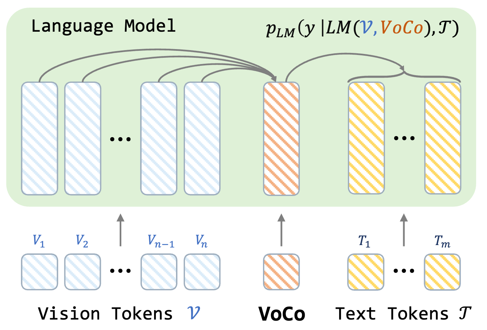
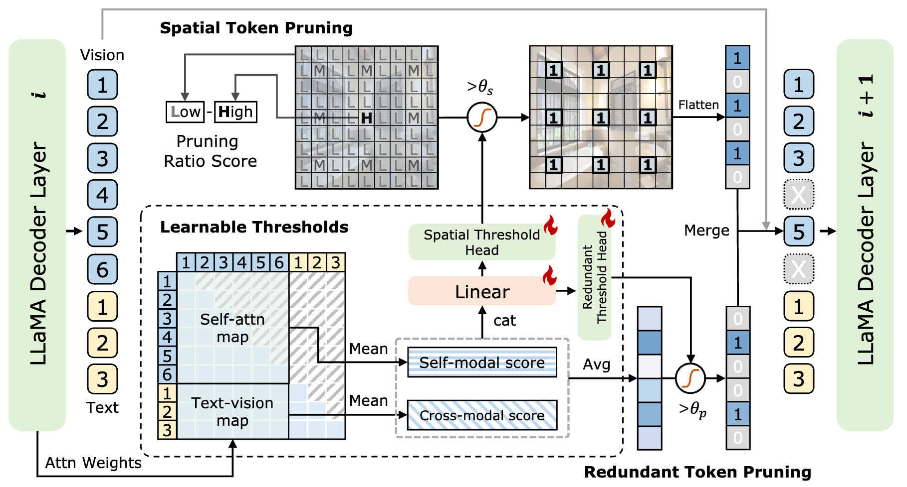
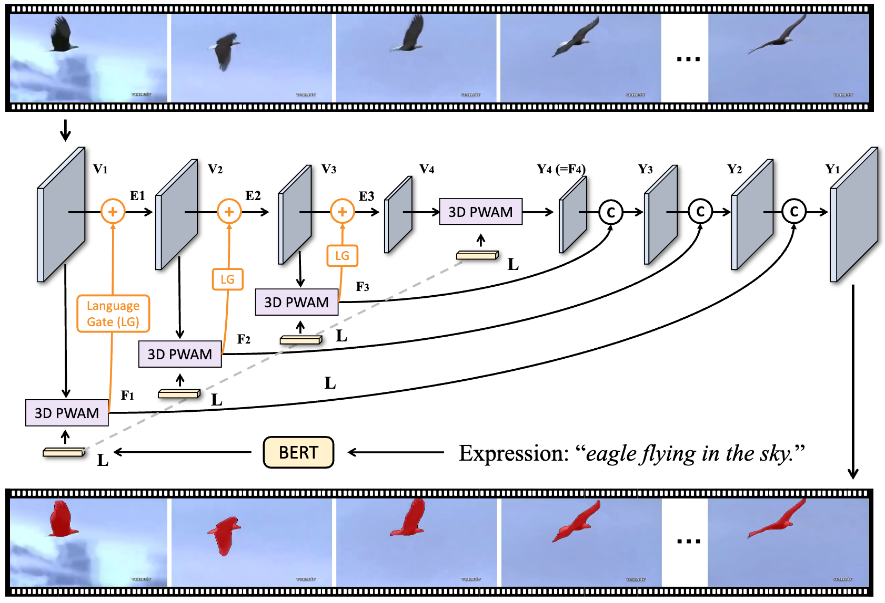

|
News
2025-02: A paper on vision token pruning for MLLMs accepted by CVPR, 2025.
2025-02: A paper on vision compression with LLMs accepted by CVPR, 2025.
2024-12: Start an internship at Bytedance Douyin.
2024-09: A paper on referring image & video segmentation accepted by TPAMI, 2024.
2024-02: Start an internship at Tencent ARC Lab.
|
|
Recent Publications
* Indicates Equal Contribution
|
|

|
VoCo-LLaMA: Towards Vision Compression with Large Language Models
Xubing Ye,
Yukang Gan,
Xiaoke Huang,
Yixiao Ge,
Yansong Tang
IEEE/CVF Conference on Computer Vision and Pattern Recognition (CVPR), 2025
[arXiv]
[PDF]
[Project Page]
[Code]
We propose VoCo-LLaMA, the first approach to compress vision information utilizing the LLMs' understanding paradigm, which can compress hundreds of vision tokens into a single VoCo token with minimal visual information loss.
|
|

|
ATP-LLaVA: Adaptive Token Pruning for Large Vision Language Models
Xubing Ye,
Yukang Gan,
Yixiao Ge,
Xiao-ping Zhang,
Yansong Tang
IEEE/CVF Conference on Computer Vision and Pattern Recognition (CVPR), 2025
[arXiv]
[PDF]
[Project Page]
We propose ATP-LLaVA, a framework that adaptively determines pruning ratios instance-wise and LLM layer-wise for effective vision token pruning on large vision language models.
|
|

|
Language-Aware Vision Transformer for Referring Segmentation
Zhao Yang*,
Jiaqi Wang*,
Xubing Ye*,
Yansong Tang,
Kai Chen,
Hengshuang Zhao,
Philip H.S. Torr
IEEE Transactions on Pattern Analysis and Machine Intelligence (TPAMI, IF=20.8), 2024
IEEE/CVF Conference on Computer Vision and Pattern Recognition (CVPR), 2022
[IEEE]
[PDF]
[Code]
[Conference Version]
We propose LAVT, a Transformer-based universal referring image and video segmentation (RIS and RVOS) framework that performs language-aware visual encoding in place of cross-modal fusion post feature extraction.
|
|
Selected Honors and Awards
Zhaoyi Scholarship, Comprehensive Outstanding Scholarship of Tsinghua University, 2024. (清华大学综合优秀奖学金, 校级一等)
First Prize Scholarship of Tongji University, 2023. (同济大学综合优秀奖学金, 校级一等)
Second Prize Scholarship of Tongji University, 2021, 2022. (同济大学综合优秀奖学金, 校级二等)
|
|
|
Bytedance Douyin, Beijing, China. December, 2024 - Now.
Project: AI Search with MLLMs.
Work with Dr. Baihan Shu, Dr. Huaishan Zhou.
|
|
|
|
Tencent ARC Lab (PCG), Shenzhen, China. February, 2024 - December, 2024.
Project: Token Pruning & Compression for MLLMs, Image & Video QA.
Work with Dr. Yukang Gan, Dr. Yixiao Ge, Dr. Ying Shan.
|
|
© Xubing Ye | Last updated: Feb. 28, 2024 | Website Template
|